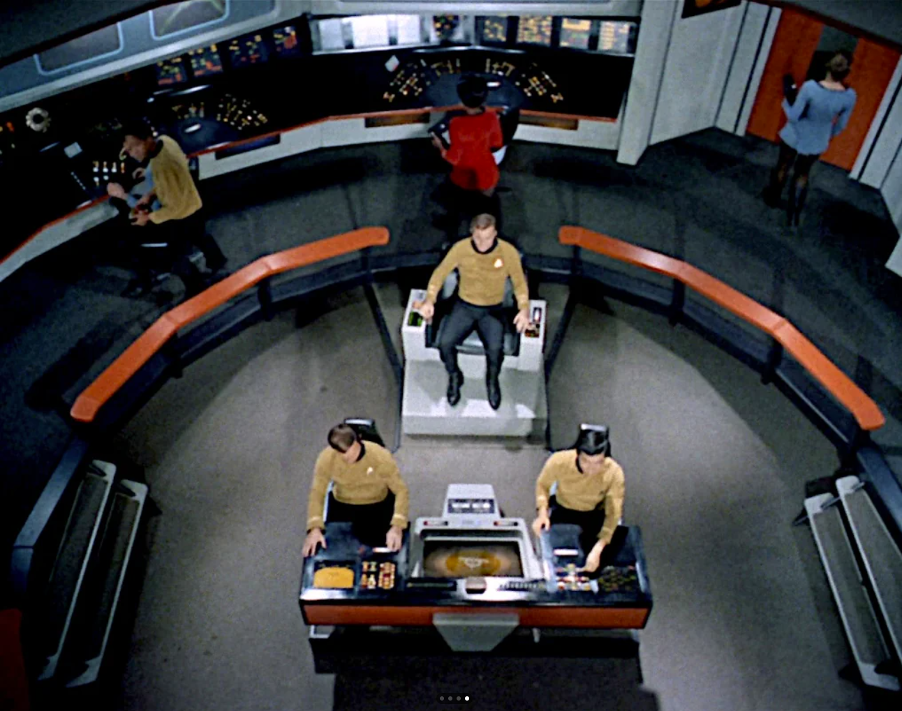
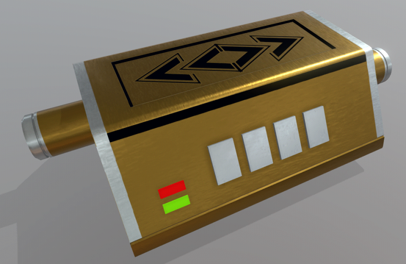
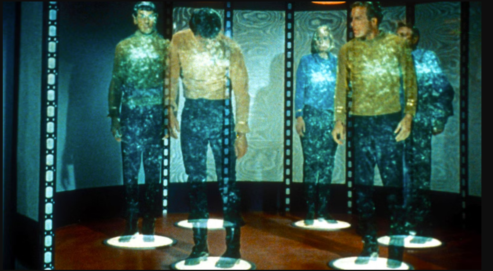
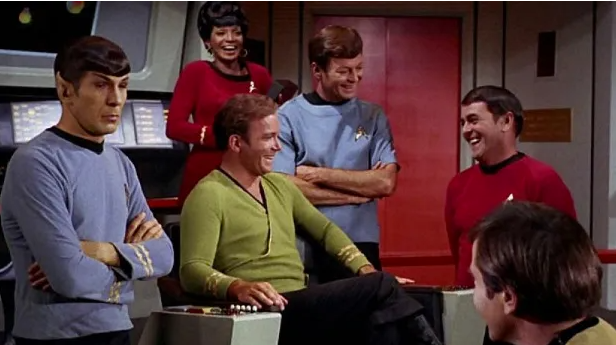
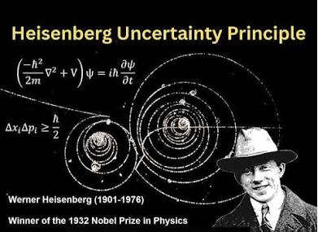
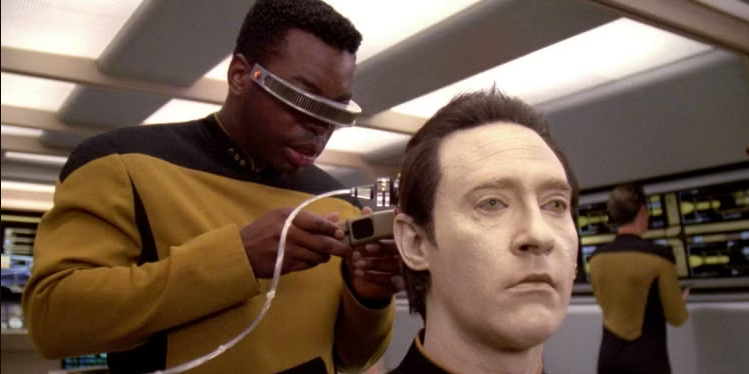
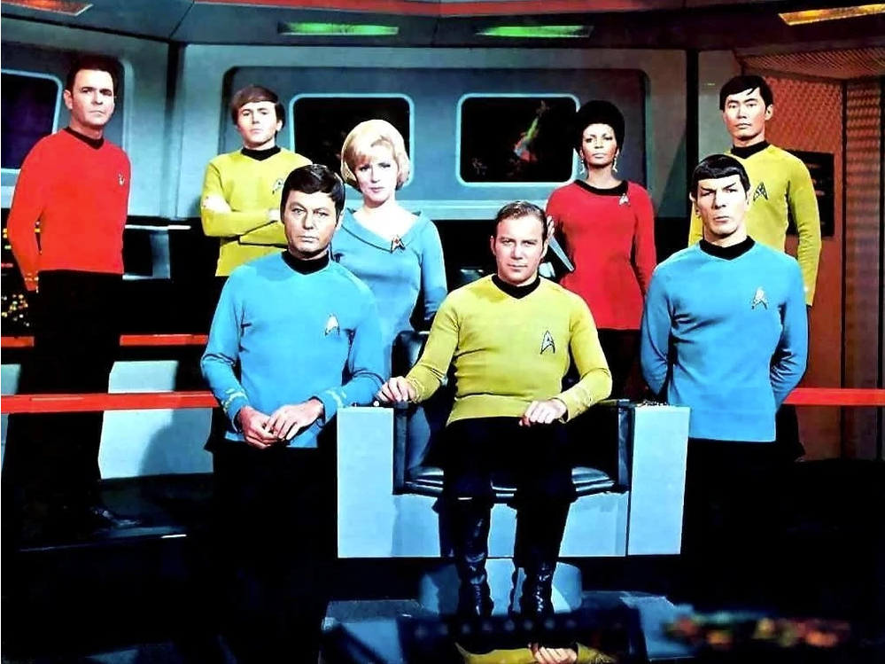

The Colourful Bridge
The original Set of the Enterprise was styled as any military ship, grey walls, white lights and a simple coloured uniform. Colour TV was being standardised and the Execs wanted those who had forked out for more expensive colour TVs to feel better about their purchases so a mandate was issued to make the sets more colourful, hence the Different coloured uniforms, Bridge Panels, lights and buttons.

Self Sealing Stem Bolts
Used, again as a plot device during an episode of Star-trek Deep Space nine called "Progress" as a comodity to be traded and even a prop was developed for the device, but nobody knows what they actually are, though they have popped up repeatedly in other series, almost as an in-joke.

Transporter Accident
As the first episodes were aired, the budget had not been assigned to build the Shuttlecraft Prop. To Counter this for the first episodes, the crew used a "Transporter", a magical device that could "Beam" the crew from ship to planet using cheap special effects instead of an expensive prop. One episode (The Enemy Within) included a crew Member stranded on a planet about to Freeze while the crew tried fixing the transporter and no mention was made to Justsend a shuttle that would have saved him pretty quickly.

Product of the Era
Star Trek; the original Series, ran from 1966 to 1969, ending before man had set foot on the moon. This was before the Viking probes landed on mars when we didn't know for certain that there weren't little green men on mars. This was an age of Studio Execs who had specific demands that shaped the Star Trek we knew today. These demands can be seen significntly today. A Pilot Episode "The Cage" was released before the Series was approved for production. The footage for this pilot was used extensively in the Season 1 double episode "the Menagerie" and the differences in style and structure are evident. Most of these were a result of Exec interferences.

Story Interference
The Studio had one significant Constraint when developing the Original Series - "The Status Quo must be maintained" This was because they wanted to run the episodes in any order they chose, whenever they wanted and people could tune in and watch without having missed anything in other episodes. This lead to extremely limited Character constraint and many story lines ruined. In the episode "For the world is Hollow and I have touched the Sky" - Dr. McCoy is diagnosed with a mortal illness that he has to stay on a planet where he has contracted the illness. To maintain the Status Quo, Kirk (Not a scientist or Doctor) develops a Miracle Cure to completely change the ending for the status quo. In the Episode "The Apple" The crew of the enterprise encounter a race of innocent child-like beings who are being 'Ruled' by a computer ruler. At the end of the episide, Kirk disobeys the non interference prime directive and destroys the computer before telling the people (who don't know how to rule themselves and are full of sorrow at the end of their civilisation) that they are to Celebrate, they are all free, before Setting off to the stars on the starship for another episode.

Heisenberg Compensators
Heisenbergs Uncertainty Principle states how you cannot measure the exact location and Speed of a particle at the same time. Once you measure one, the other becomes fuzzy. This is a big hindrance to a Transporter, which "Teleports" people and equipment instantaneously across space across a beam, one atom at a time. The answer was to refer to a fictional device called a "Heisenberg compensator" during episedes where the transporter would malfuntion, but the device was simply a plot device and nobody had a clue how it would work. The Special effects team would get calls asking "How does the Heisenberg Compensators work?" and they would answer "They work Just fine, thank you"

Ultimate Engineering Fix
When the Enterprise is in trouble and things aren't working, Geordi LaForge can often be found mentioning how he needs to "reconfigure the power couplings" as a fix. This is used often in the show, in battle or during investigations. Reading between the lines, this is a fancy way of saying "Turn it off and on again"

Sexism in plain view
In the Pilot, the enterprise was captained by Captain Christopher Pike and Second in Command was 'Number 1', Una chin Rilley. Execs (and the test audiences to be fair) did not gel with the idea of a woman in power so she was written out of the cast. Only three women were on the crew as a staple, Yeoman Janice Rand, Nurse Christine Chapel and the 'Comms Officer' (receptionist) Nyota Uhura, also the only person of non-european descent.